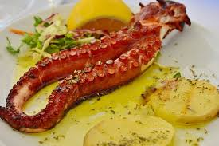

SUSHI
FORMA DE PREPARACION
Existen muchas formas deliciosas de preparar el pulpo, pero la base para casi todas las recetas es cocinarlo previamente para ablandar su carne.
TIPOS DE PULPO
el común (de gran tamaño y usado en gastronomía), el de anillos azules (pequeño y altamente venenoso), el pigmeo (uno de los más pequeños) y el gigante del Pacífico (el más grande conocido)
QUE PARTES NO SE COMEN
los órganos internos, el estómago y los intestinos que se encuentran dentro de la cabeza.
PARTES MAS RICAS
los órganos internos, el estómago y los intestinos que se encuentran dentro de la cabeza.
SABOR
El pulpo tiene un sabor suave y ligeramente dulce
| Característica | Descripción | Platillo de ejemplo |
| Sabor y textura | El pulpo tiene un sabor suave, ligeramente dulce y oceánico. Si está bien cocinado, su textura es tierna, firme y ligeramente viscosa. Una mala cocción puede hacerlo correoso. | Pulpo a la gallega (España): trozos cocidos servidos sobre papas con pimentón, sal gruesa y aceite de oliva. |
| Formas de preparación | Se puede cocer en agua hirviendo (a veces "asustándolo" tres veces para evitar que quede chicloso), asar a la parrilla, saltear en ajo, o servir crudo y marinado. | Takoyaki (Japón): Bolitas de masa rellenas de pulpo picado, cocinadas en una sartén especial. |